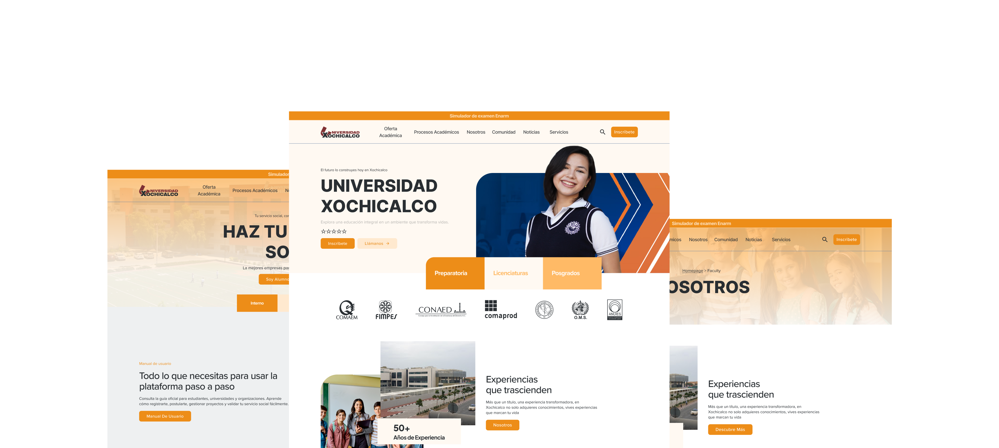
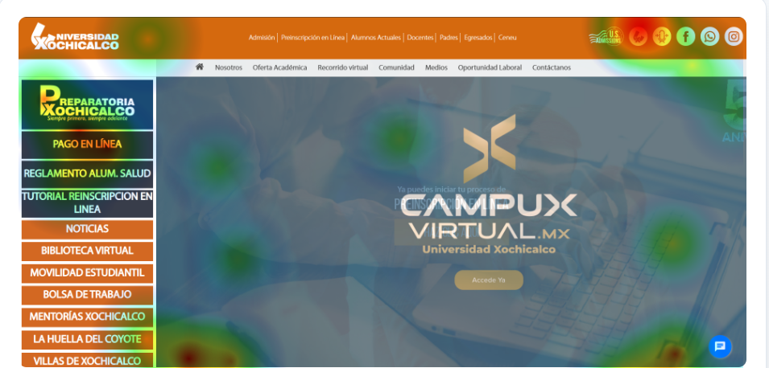
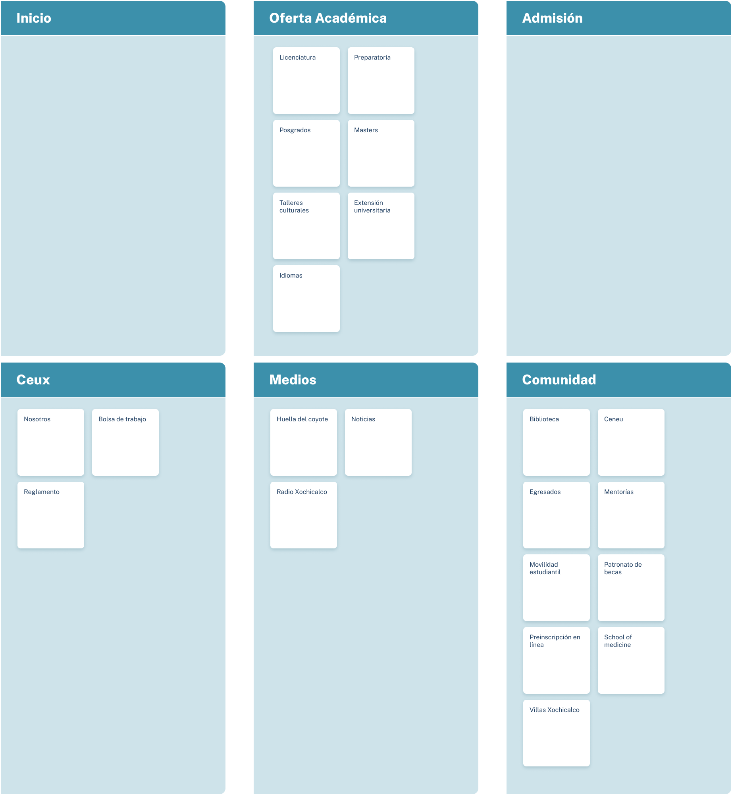
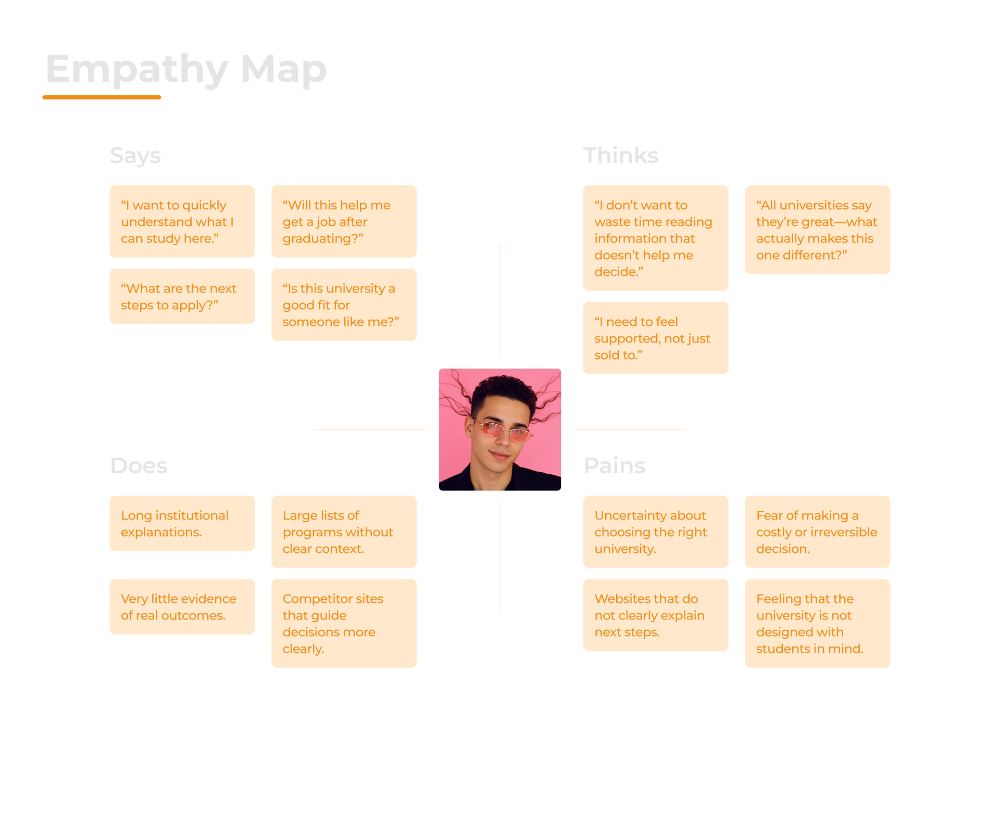

Website Xochicalco
This university website redesign brings academic information, programs, and admissions content into a clear, intuitive digital experience tailored to students and families in Ensenada, Baja California.


Project Context
Scope, tools, and responsibilities
This project involved redesigning an informational university website with real technical and time constraints. The goal was not to rebuild the site from scratch, but to significantly improve the experience within an existing CMS and component-based setup.
Problem Statement
Competing goals created confusion and low conversion
TBecause the site tried to balance institutional messaging and sales objectives, users struggled to identify next steps. Key conversion paths were buried under informational content, weakening the site’s effectiveness as a recruitment tool.
The main issues identified were:
- Users could not easily identify actions related to enrollment or programs
- Navigation mixed institutional and sales content without clear prioritization
- High-value sales sections showed low engagement
- Users abandoned internal pages before reaching conversion points
These issues indicated a misalignment between user intent and site structure.
Goals
Refocus the experience around conversion
The redesign aimed to realign the site with its primary business goal: student acquisition.
- Redefine the information architecture around sales-driven user journeys
- Clearly prioritize programs, admissions, and contact pathways
- Reduce cognitive load by removing or de-emphasizing institutional content
- Increase engagement and conversion on priority sections
Solution
A conversion-focused experience built around user intent
The solution was a complete restructuring of the website into a sales-driven, goal-oriented experience. By redefining the information architecture and prioritizing high-intent user journeys, the site now clearly guides prospective students toward programs, admissions information, and next-step actions.
Research Phase
Validating the need for a sales-first structure
Competitive Analysis
Identifying UX Opportunities Through Market Comparison
- A UX comparison between Xochicalco, CETYS, Vizcaya (UVA), and UAD Lobos revealed clear differences in value communication and conversion focus.
- Top-performing competitors communicated their value proposition early and structured navigation around user goals, while lower-performing sites relied on institutional language that slowed decision-making.
- Xochicalco offers strong practical and regional value but does not surface these strengths clearly in the early user journey.
- These findings highlight the need to redesign the experience around clarity, user intent, and conversion-driven navigation.
Heatmap Analysis
User Attention Insights and CTA Strategy Shift
Heatmap analysis on key pages revealed that users primarily focused on navigation elements and sections related to the academic offer, rather than completing transactional actions. While initial designs emphasized online payment as a primary action, insights showed the website performs better as an information and lead-generation platform.
Primary actions were reframed to guide users toward exploring programs and leaving contact information, clearly positioning the site as the main entry point for prospective students. Transactional actions such as online payments were intentionally redirected to a dedicated student portal, designed specifically to support enrolled students with tasks like payments, administrative processes, and academic management.
This separation helped reduce visual competition between sales-driven CTAs and informational content, improved content hierarchy within high-attention zones, and increased alignment between user intent and page goals.
Site Metrics (Pre-Redesign)
Behavioral metrics supported the qualitative findings and showed weak performance for a sales-oriented site.
User Interviews
Eight semi-structured interviews were conducted with prospective students and first-time visitors. The conversations focused on intent, expectations, and decision-making behavior.
- Users expected the site to quickly guide them toward programs and next steps
- Institutional content distracted from enrollment-related decisions
- Users described sections in goal-oriented terms (“apply,” “study,” “programs”), not institutional labels
This reinforced the need to redesign around conversion intent.
Card Sorting
Aligning structure with user intent
An open card sorting exercise with 12 participants revealed that users naturally grouped content around decision-making and action, not institutional categories.
- Clear grouping around programs, admissions, and next steps
- Preference for simplified, goal-oriented section names
- Identification of redundant or low-value institutional categories
This became the foundation for the new sales-focused information architecture.
Pain Points
-
High bounce rate indicated misaligned value proposition
A 62% bounce rate on the homepage showed that users did not immediately find content aligned with their intent, suggesting that a sales-oriented entry point failed to support exploration and decision-making.
-
Low engagement reflected limited content relevance
An average time on page of only 30 seconds indicated shallow interaction, likely driven by transactional messaging that did not encourage deeper consideration of the academic offer.
-
Weak CTR exposed ineffective sales-driven CTAs
A 3.1% click-through rate on key sales sections revealed that users were not ready to commit to transactional actions, highlighting the need to shift toward lead-based conversion paths.
-
Shallow navigation depth showed poor journey continuity
An average navigation depth of 1.8 pages suggested that users were not motivated to continue exploring the site, reinforcing the need to reposition the website as a discovery and lead-generation platform rather than a transactional one.
Empathy Map
Prospective Student – First-Time Website Visitor
A prospective undergraduate student visiting the university website for the first time and comparing multiple institutions.
User Personas
Understanding Our Users
To build a solution truly aligned with student needs, I developed two key personas—one representing high school students (primary persona) and another representing their tutors (secondary persona).
These personas were informed by early research, surveys, and on-campus observations, allowing me to understand not only what students do inside the website.
Tutor
.png)
Student
.png)
Journey Map
Enrollment Decision Journey
To better understand how prospective students and parents interact with the university website, I mapped the complete enrollment decision journey—from initial discovery to first contact with admissions. This journey map highlights user goals, key digital touchpoints, and moments of friction caused by institutional messaging and unclear navigation, while revealing how clearer value communication, goal-oriented navigation, and conversion-focused touchpoints can reduce uncertainty, build trust, and guide both students and parents toward confident enrollment decisions.
Tutor
.png)
Tutor
.png)